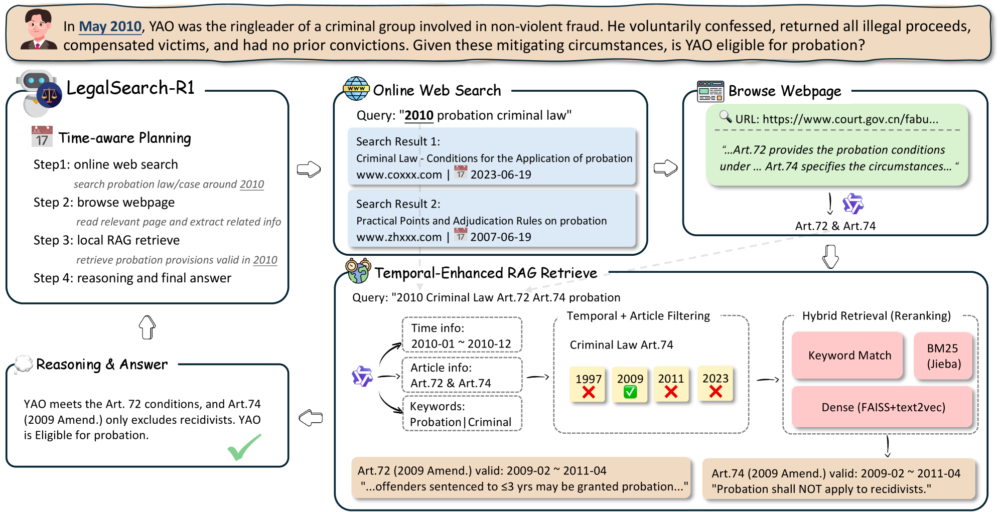
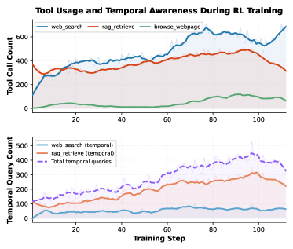
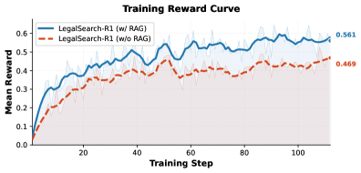
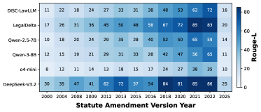
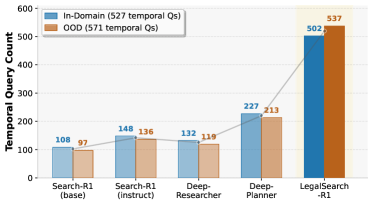

LegalSearch-R1 demonstrates that reinforcement learning on temporally-indexed data with a hybrid RAG-web search architecture can overcome the temporal bias of LLMs and search agents, achieving significant gains in temporal consistency for legal reasoning.
本文揭示了LLM和搜索智能体在时间一致性上的严重缺陷，并提出LegalSearch-R1框架，通过基于GRPO的强化学习在时间索引数据上训练，结合本地法条RAG与网络搜索的双工具架构，显著提升了法律推理中的时间对齐能力。7B模型在时间一致性指标上超越现有最先进方法12.9%-29.8%，为时间敏感领域提供了可复用的解决方案。
Deep Note — legalsearch-r1
Key Takeaways - LLMs and search agents suffer from temporal bias, peaking near training cutoff and degrading on earlier/later statute versions. - LegalSearch-R1 uses GRPO-based RL on temporally-indexed data to enforce temporal consistency in legal agentic search. - A dual-tool architecture (local statute RAG + web search) achieves precise article-level retrieval and broader legal knowledge. - 7B model outperforms SOTA deep research frameworks and specialized legal LLMs by 12.9%-29.8% and baselines by 57.7%-80.3% on temporal consistency. - Entropy-based advantage shaping accelerates learning of temporal query formulation.
0) Metadata
- Title: Can LLMs Time Travel? Enhancing Temporal Consistency in Legal Agentic Search through Reinforcement Learning
- Alias: legalsearch-r1
- Authors: Wei Fan, Yining Zhou, Mufan Zhang, Yanbing Weng, Yiran HU, Tianshi Zheng, Baixuan Xu, Chunyang Li, Jianhui Yang, Haoran Li, Yangqiu Song
- arXiv ID: 2605.25920
- Published:
- Links:
- Abs: https://arxiv.org/abs/2605.25920
- HTML: https://arxiv.org/html/2605.25920v1
- PDF: https://arxiv.org/pdf/2605.25920
- Tags: legal-reasoning, temporal-consistency, reinforcement-learning, agentic-search, retrieval-augmented-generation
- Domains: system_safety
- Rating: 5/5 (base 1 + quality 2 + observation 2)
1) Why-read
LegalSearch-R1 demonstrates that reinforcement learning on temporally-indexed data with a hybrid RAG-web search architecture can overcome the temporal bias of LLMs and search agents, achieving significant gains in temporal consistency for legal reasoning.
2) CRGP
C — Context
LLMs augmented with agentic search are promising for legal reasoning but overlook the fundamental constraint that applicable law must match the temporal context of each case. Prior work shows that legal LLMs suffer from temporal bias anchored to their training cutoff, and search agents rarely incorporate temporal constraints into queries.
R — Related work
- Legal-specialized LLMs (ChatLaw, Lawyer LLaMA, DISC-LawLLM, LawGPT, InternLM-Law, SaulLM) show temporal degradation on amended statutes.
- ChronosLex and LexTempus reveal significant degradation on temporally shifted legal inputs; FreshLLMs and LexTime confirm LLMs struggle with time-sensitive knowledge.
- Existing legal RAG systems (SAILER, LeCaRD) treat retrieval as static one-shot without temporal filtering or multi-turn reasoning.
- Agentic search systems (Open Deep Search, Search-R1, R1-Searcher, DeepResearcher, EvolveSearch, ReSearch, WebThinker, DeepPlanner) lack temporal consistency enforcement and rely solely on web search.
- LRAS and L-MARS show gains from dynamic agentic search in law but do not address temporal consistency.
G — Gap
Current legal LLMs and agentic search systems fail to enforce temporal consistency: LLMs exhibit temporal bias toward their training cutoff, search agents rarely include temporal constraints in queries, and web search alone cannot provide precise statute and precedent citations. No existing framework combines temporally-indexed training data with a dual-tool architecture of local statute RAG and online web search to address this.
P — Proposal
LegalSearch-R1 is an end-to-end reinforcement learning framework using GRPO on temporally-indexed data spanning multiple amendment periods. It pairs local statute RAG for precise article matching with online web search for broader legal knowledge, and employs entropy-based advantage shaping to accelerate learning of temporal query formulation.
---
4) Experiments
Main results
On a benchmark covering 13 legal tasks (7 in-domain, 6 out-of-domain), LegalSearch-R1 (7B) outperforms SOTA deep research frameworks and specialized legal LLMs by 12.9% to 29.8%, surpasses baselines by 57.7% to 80.3% on temporal consistency, and shows robust out-of-domain generalization.
Ablation
Entropy-based advantage shaping significantly accelerates learning of temporal query formulation; the dual-tool architecture (local RAG + web search) outperforms using either tool alone.
Limitations
['The framework is evaluated only on Chinese legal tasks; generalizability to other legal systems (e.g., common law) is not demonstrated.', 'The reliance on a curated local statute corpus may limit scalability to jurisdictions with less structured legal databases.', 'The 7B parameter model may still face challenges with very long or complex multi-hop legal queries.']
5) Why it matters
- Temporal consistency is a critical yet overlooked failure mode in legal AI; this work provides a principled RL-based solution.
- The hybrid RAG-web search architecture offers a blueprint for domain-specific agentic search where precision and breadth are both needed.
- The use of temporally-indexed training data and advantage shaping can be adapted to other time-sensitive domains (e.g., medical guidelines, financial regulations).
6) Next steps
- [ ] Evaluate LegalSearch-R1 on common law datasets (e.g., US or UK case law) to test cross-jurisdiction transfer.
- [ ] Extend the framework to incorporate judicial precedent retrieval alongside statute retrieval.
- [ ] Explore scaling the model size and training data to improve performance on complex multi-hop queries.
- [ ] Integrate temporal consistency constraints into other agentic search frameworks for non-legal domains.
7) Scoring
5/5 = base 1 + quality 2 + observation 2
LLM能否时间旅行？通过强化学习增强法律智能搜索中的时间一致性
主要结论 - LLM和搜索智能体存在时间偏差，在训练截止日期前后的法律条文版本上表现最佳，而对更早或更晚版本性能显著下降。 - LegalSearch-R1采用基于GRPO的强化学习，在跨越多个修订期的时间索引数据上训练，强制模型在查询和推理中考虑时间上下文。 - 双工具架构（本地法条RAG + 网络搜索）实现了精确的法条级检索与广泛的法律知识获取的平衡。 - 7B模型在时间一致性上超越最先进的深度研究框架和专业法律LLM 12.9%-29.8%，超越基线方法57.7%-80.3%。 - 基于熵的优势塑形（entropy-based advantage shaping）加速了模型学习时间感知查询表述的能力。
1) 阅读理由
LegalSearch-R1证明，在时间索引数据上使用强化学习，并结合混合RAG-网络搜索架构，能够克服LLM和搜索智能体的时间偏差，在法律推理中实现显著的时间一致性提升。
2) CRGP（背景 / 相关工作 / 差距 / 方案）
背景：增强搜索的LLM在法律推理中很有前景，但忽略了适用法律必须匹配案件时间上下文这一基本约束。已有工作表明法律LLM存在锚定于训练截止日期的时间偏差，搜索智能体也极少在查询中加入时间约束。 相关工作：专业法律LLM（ChatLaw、Lawyer LLaMA等）在修订后的法律条文上表现退化；ChronosLex和LexTempus揭示了时间偏移输入下的显著退化；现有法律RAG系统（SAILER、LeCaRD）将检索视为静态一次性操作，缺乏时间过滤或多轮推理；智能体搜索系统（Open Deep Search、Search-R1等）缺乏时间一致性约束，仅依赖网络搜索；LRAS和L-MARS展示了动态智能体搜索在法律中的优势，但未解决时间一致性问题。 差距：当前法律LLM和智能体搜索系统未能强制时间一致性：LLM表现出对训练截止日期的时间偏差，搜索智能体很少在查询中包含时间约束，仅靠网络搜索无法提供精确的法条和先例引用。尚无框架将时间索引训练数据与本地法条RAG和在线网络搜索的双工具架构相结合来解决此问题。 方案：LegalSearch-R1是一个端到端强化学习框架，使用GRPO在跨越多个修订期的时间索引数据上训练。它将本地法条RAG用于精确法条匹配，与在线网络搜索用于更广泛的法律知识相结合，并采用基于熵的优势塑形来加速时间感知查询表述的学习。
3) 实验
在涵盖13个法律任务（7个域内、6个域外）的基准测试上，LegalSearch-R1（7B）在时间一致性上超越最先进的深度研究框架和专业法律LLM 12.9%至29.8%，超越基线方法57.7%至80.3%，并展现出鲁棒的域外泛化能力。
消融实验
基于熵的优势塑形显著加速了时间感知查询表述的学习；双工具架构（本地RAG + 网络搜索）优于单独使用任一工具。
局限性
['该框架仅在中文法律任务上评估，未证明对其他法律体系（如普通法）的泛化能力。', '对精心整理的本地法条语料库的依赖可能限制其在法律数据库结构化程度较低的法域的可扩展性。', '7B参数模型在处理非常长或复杂的多跳法律查询时仍可能面临挑战。']
4) 重要性
- 时间一致性是法律AI中一个关键但被忽视的失败模式，本工作提供了基于强化学习的原理性解决方案。
- 混合RAG-网络搜索架构为需要兼顾精确性和广泛性的领域特定智能体搜索提供了蓝图。
- 时间索引训练数据和优势塑形的方法可适配其他时间敏感领域（如医疗指南、金融法规）。
5) 下一步
- [ ] 在普通法数据集（如美国或英国判例法）上评估LegalSearch-R1，测试跨法域迁移能力。
- [ ] 扩展框架以纳入司法先例检索，与法条检索相结合。
- [ ] 探索扩大模型规模和训练数据，以提升复杂多跳查询的性能。
- [ ] 将时间一致性约束集成到非法律领域的其他智能体搜索框架中。




